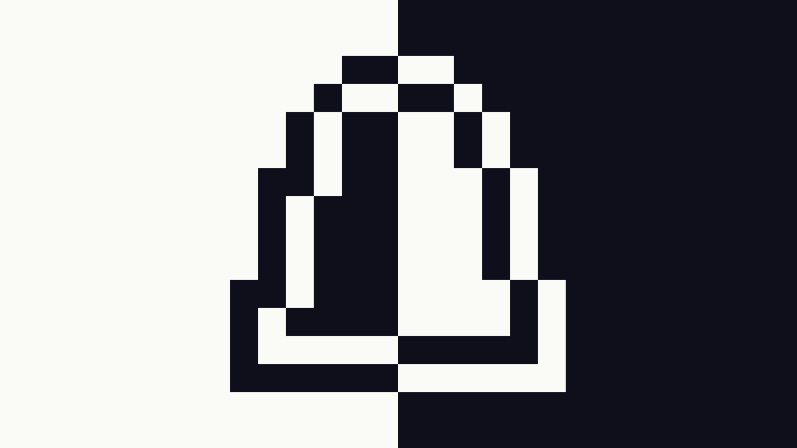

Best Work

Time-Traveling Droplet
A 2D side-scrolling platformer where time travel isn’t just a gimmick - it’s survival. Switch between two world states to dodge obstacles and reach the finish line. Perfect timing is the key (and maybe a little bit of luck).

Self-Sabotage
A 3D murder-mystery puzzle solving game. Made in SPX style. Each day feels normal - until you take out the trash. Locked doors, missing keys, and unsettling whispers hint at a truth your mind refuses to accept. Someone is working against you… but is it yourself?